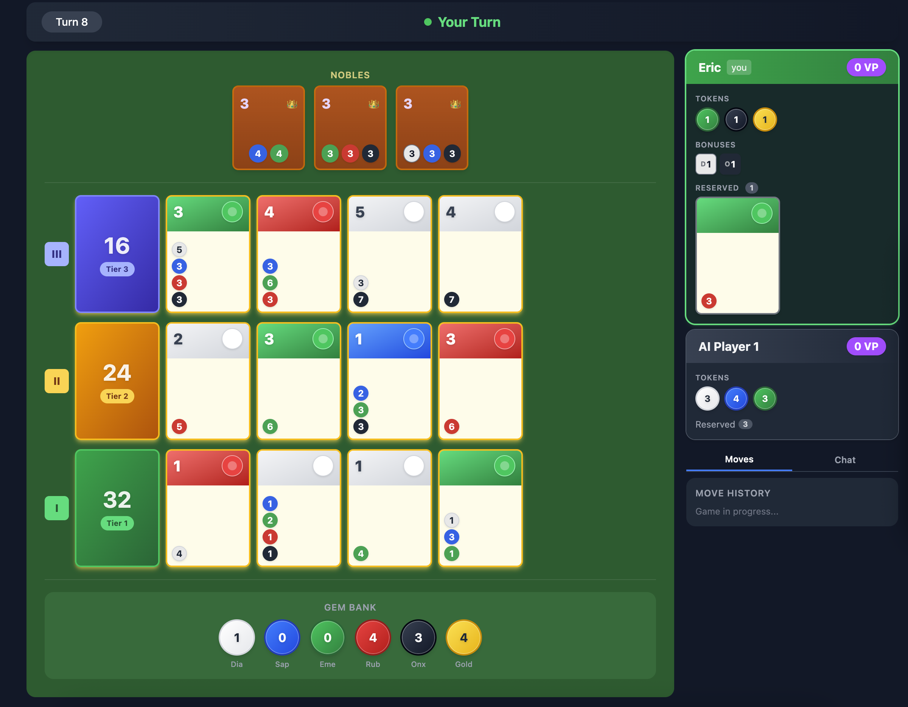
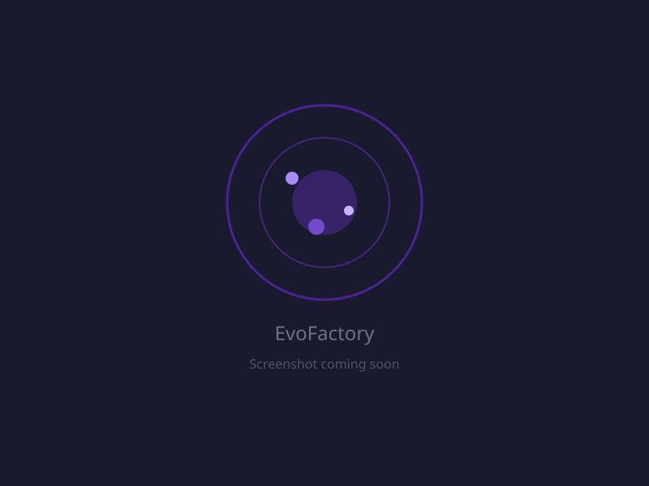
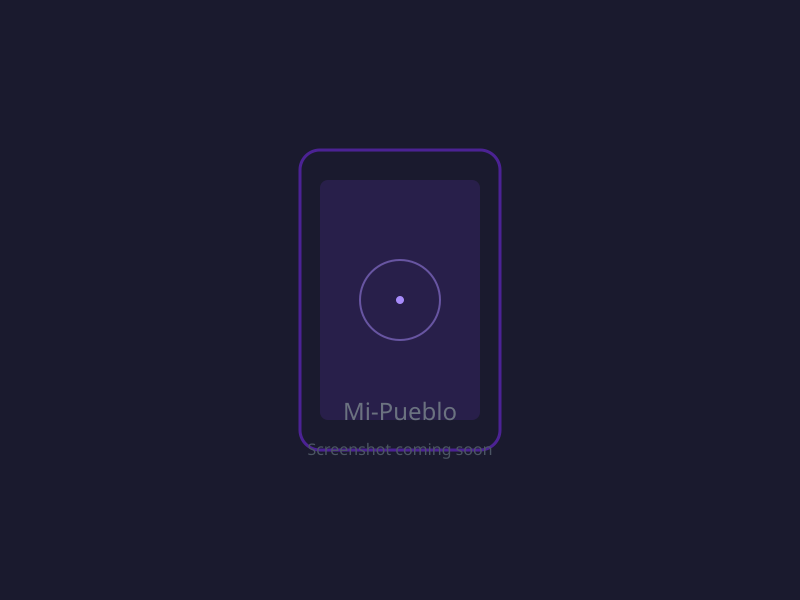
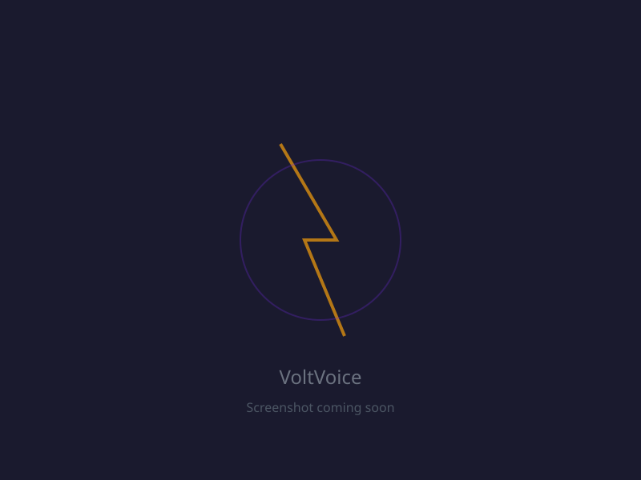

Eric Klinkhammer
I write code, build robots, and make cheese with robots.
Projects
Things I'm building or have built.

Splendor
Game engine and web client for the Splendor board game. Multiplayer online play with lobbies and invite sessions. Haskell backend with a React TypeScript frontend, containerized with Docker.
EvoFactory
Real-time cell biology sim. Control a living cell, absorb resources, build organelles, and evolve through a tech tree. Built with Godot 4 and Rust via GDExtension.


Mi-Pueblo
Family location sharing app with geofencing, group management, and multi-language support. Elixir/Phoenix backend, Flutter mobile client, PostGIS for spatial data.
VoltVoice.io
Bitcoin donation platform for streamers via BTCPay Server and Lightning Network. React/Vite frontend, Go/Gin backend, fully self-custody.

Honk
A driver appreciation platform. Think "Strava for truck drivers."
What is Honk?
Drivers share trips, mileage, and stats with social features — buddies, leaderboards, and shared location. Verified driving history serves as proof-of-work for reputation.
The platform also includes an ELD aggregator for real-time driver locations and Hours of Service (HOS) data.
Trip Sharing
Share routes, mileage, and driving stats with the community.
Social Features
Buddies, leaderboards, and shared real-time location.
Verified History
Driving history as proof-of-work for driver reputation.
ELD Aggregator
Real-time driver locations and HOS data from ELD devices.
Looking to Hire a Driver?
Try our MCP-powered AI recruiter. It searches verified driver profiles, matches qualifications to your requirements, and surfaces candidates you'd never find on a job board.
Try the RecruiterTech Stack
Appropos
AI-powered software contracting. Building custom AI solutions.
Visit appropos.aiBlog
Occasional writing about software, robotics, and cheesemaking.